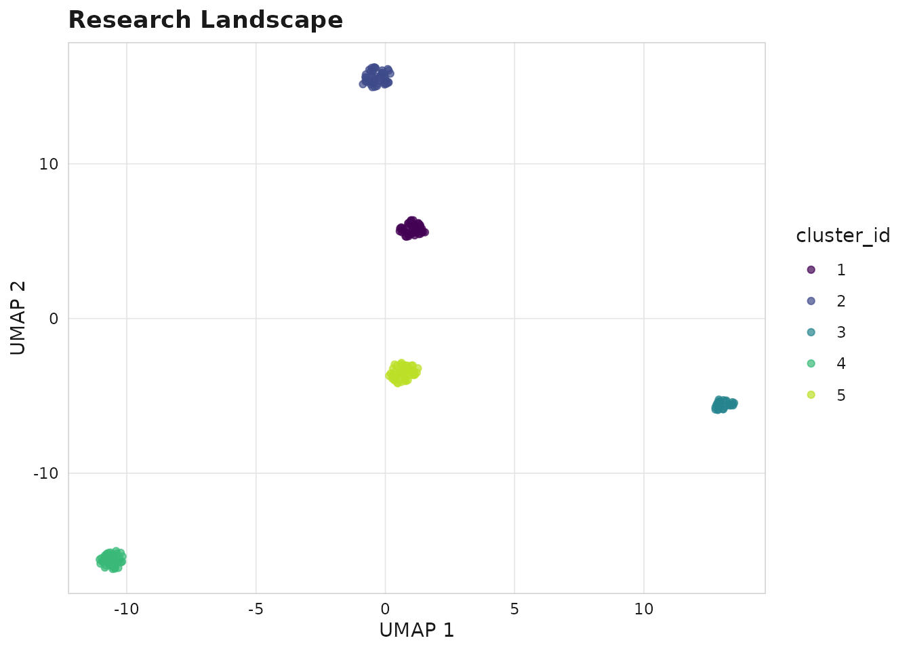

Embeddings and Cluster Discovery
Source:vignettes/embeddings-and-clusters.Rmd
embeddings-and-clusters.RmdSemantic research landscape
scimapR uses text embeddings to discover research clusters and visualise the intellectual structure of a field.
library(scimapR)
# Example corpus comes with pre-computed embeddings
corpus <- sm_example_corpus(with_embeddings = TRUE, seed = 42)Clustering
HDBSCAN
corpus <- sm_cluster_hdbscan(corpus, min_cluster_size = 10)
#> ✔ HDBSCAN clustering complete.
#> ℹ 5 clusters found, 0 noise points.
table(corpus$works$cluster_id)
#>
#> 1 2 3 4 5
#> 40 45 27 39 49Visualise the landscape
sm_plot_landscape(corpus, color_by = "cluster_id", reducer = "umap")
Research landscape coloured by cluster
Cluster labels (TF-IDF)
labels <- sm_cluster_label(corpus, method = "tfidf", n_terms = 5)
#> ✔ 5 clusters labelled using "tfidf" method.
head(labels)
#>
#> ── <sm_corpus> ─────────────────────────────────────────────────────────────────
#> Works: 6 | Authors: 80 | Institutions: 0
#> Years: 2018 - 2024
#> Sources (journals): 10
#> Embeddings: 6 x 64
#> Provenance: synthetic (6)
#> Status: Unlocked (last refreshed: 2026-05-09 08:00:15)Advanced: Python-based embeddings
For production use, compute embeddings with SPECTER2:
# Requires Python + sentence-transformers
corpus <- sm_embed_works(corpus, model = "specter2")Alternatively, fetch pre-computed SPECTER embeddings from Semantic Scholar:
corpus <- sm_enrich_specter(corpus)